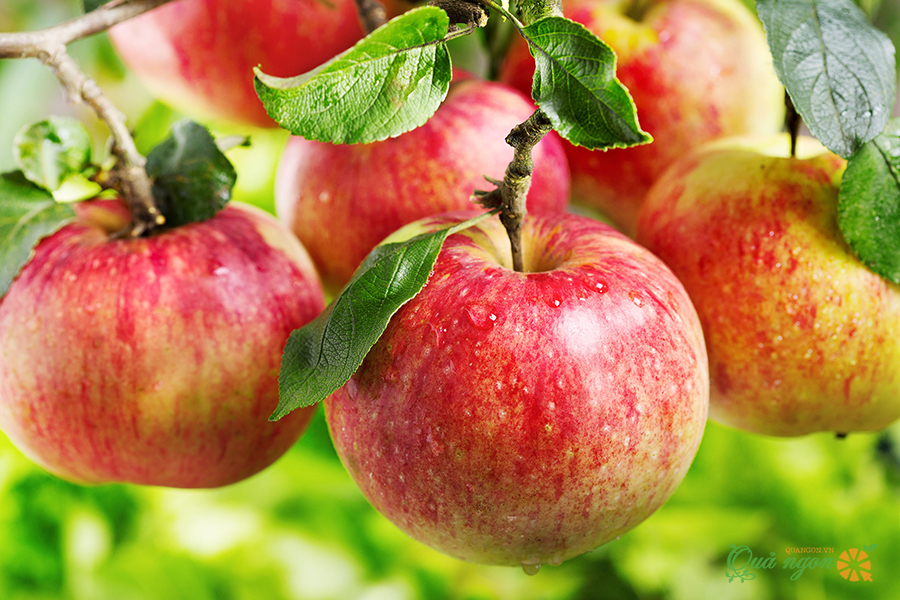
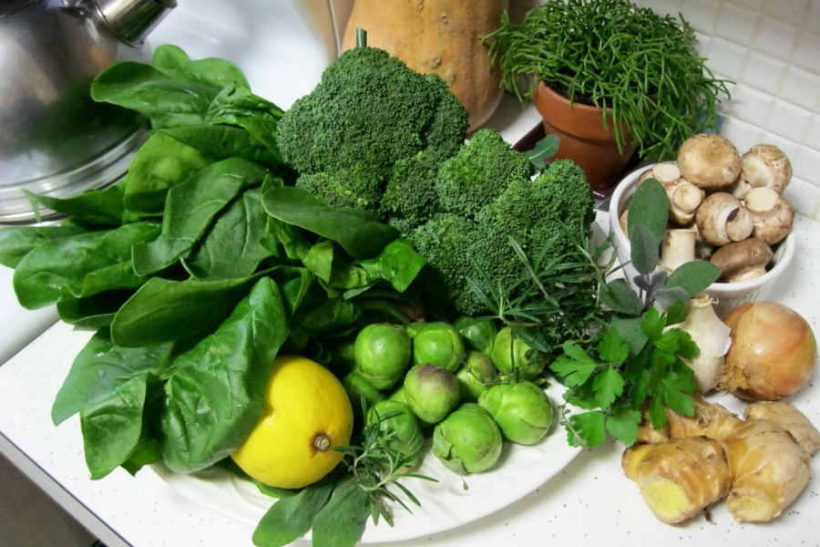

Cancer prevention foods
To prevent cancer, you can add apples, celery, bean sprouts, tomatoes, bitter melon, carrots, sweet potatoes, pumpkins, garlic ... to your daily meals. Master and pharmacist Nguyen Thi Vu Thanh - Public health expert of Global Fund advises 9 foods to increase resistance and prevent cancer effectively.

According to some studies at Hirosaki University in Japan, eating apples regularly reduces the risk of cancer by 46%, especially lung cancer. Polyphenol compounds in the apple peel have the ability to inhibit the growth of cancer cells. This is one of the antioxidants that protects cells from free radical damage. Therefore, you should eat apples regularly, taking before meals is the best time to be able to fully absorb the nutrients from this fruit.

Celery is widely used, can be combined with other foods to process into dishes. Celery contains a lot of vitamin C, Flavonol, furanocoumarin and phenolic acid so it can be pressed to drink water, helping to beautify the skin and purify the body. The substances in celery also prevent tumors from growing, inhibit the activity of prostaglandin - substances that accelerate the growth of cancer cells, help prevent free radicals from destroying cell DNA.
Carrots contain alpha-carotene and beta-carotene, and luteonin are anti-cancer aids. Therefore, regular use of carrots helps prevent a number of diseases such as breast cancer, throat cancer, prostate cancer, stomach cancer, bowel cancer, lung cancer. This root also contains many vitamins C and A to help brighten eyes, beautify skin, and improve physique. Carrots combined with other foods can be processed such as stir-fry, cook soup or smoothie, pressed into drinking water every morning.
Since ancient times, his father used garlic to treat diseases such as flu, osteoarthritis, respiratory disease, rhinitis, sinusitis and digestive tract diseases. The selenium and allium in garlic also work to prevent and destroy cells that cause breast, stomach, colon and esophageal cancer. To prevent cancer, in addition to a healthy diet, you should proactively have regular check-ups, early screening when there are signs of cancer, maintain a moderate lifestyle, and exercise regularly.